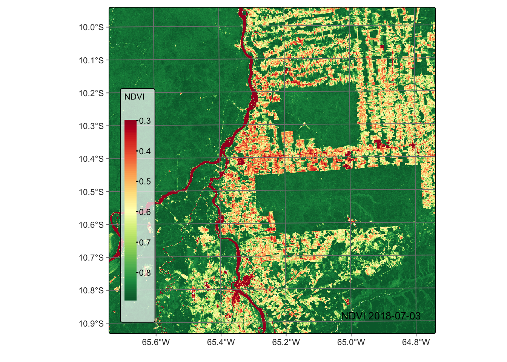

8 Operations on EO data cubes
Configurations to run this chapter
from pysits import *
import pandas as pd
pd.set_option("display.max_columns", 100)
pd.set_option("display.max_rows", 4)
# set bookdir if it does not exist
from pathlib import Path
home = str(Path.home())
tempdir_py = home + "/sitsbook/tempdir/Python/dc_cubeoperations"
Path(tempdir_py).mkdir(parents=True, exist_ok=True)
8.1 Pixel-based and neighborhood-based operations
Pixel-based operations in remote sensing images refer to image processing techniques that operate on individual pixels or cells in an image without considering their spatial relationships with neighboring pixels. These operations are typically applied to each pixel in the image independently and can be used to extract information on spectral, radiometric, or spatial properties. Pixel-based operations produce spectral indexes which combine data from multiple bands.
Neighborhood-based operations are applied to groups of pixels in an image. The neighborhood is typically defined as a rectangular or circular region centered on a given pixel. These operations can be used for removing noise, detecting edges, and sharpening, among other uses.
The sits_apply() function computes new indices from a desired mathematical operation as a function of the bands available on the cube using any valid R expression. It applies the operation for all tiles and all temporal intervals. There are two types of operations in sits_apply():
Pixel-based operations that produce an index based on individual pixels of existing bands. The input bands and indexes should be part of the input data cube and have the same names used in the cube. The new index will be computed for every pixel of all images in the time series. Besides arithmetic operators, the function also accepts vectorized R functions that can be applied to matrices (e.g.,
sqrt(),log(), andsin()).Neighborhood-based operations that produce a derived value based on a window centered around each individual pixel. The available functions are
w_median(),w_sum(),w_mean(),w_min(),w_max(),w_sd()(standard deviation), andw_var()(variance). Users set the window size (only odd values are allowed).
The following examples show how to use sits_apply().
8.2 Computing vegetation indexes
Using vegetation indexes is an established practice in remote sensing. These indexes aim to improve the discrimination of vegetation structure by combining two wavebands, one where leaf pigments reflect incoming light with another where leaves absorb incoming radiation. Green leaves from natural vegetation such as forests have a strong emissivity rate in the near-infrared bands and low emissivity rates in the red bands of the electromagnetic spectrum. These spectral properties are used to calculate the Normalized Difference Vegetation Index (NDVI), a widely used index that is computed as the normalized difference between the values of infra-red and red bands. Including red-edge bands in Sentinel-2 images has broadened the scope of the bands used to calculate these indices [1], [2]. In what follows, we show examples of vegetation index calculation using a Sentinel-2 data cube.
First, we define a data cube for a tile in the state of Rondonia, Brazil, including bands used to compute different vegetation indexes. We regularize the cube using a target resolution of 60 m to reduce processing time.
# Regularize the cube to 15 day intervals
reg_cube <- sits_regularize(
cube = s2_cube,
output_dir = tempdir_r,
res = 60,
period = "P15D",
multicores = 4)There are many options for calculating vegetation indexes using Sentinel-2 bands. The most widely used method combines band B08 (785-899 nm) and band B04 (650-680 nm). Recent works in the literature propose using the red-edge bands B05 (698-713 nm), B06 (733-748 nm), and B07 (773-793 nm) for capturing subtle variations in chlorophyll absorption producing indexes, which are called Normalized Difference Vegetation Red-edge indexes (NDRE) [1]. In a recent review, Chaves et al. argue that red-edge bands are important for distinguishing leaf structure and chlorophyll content of different vegetation species [3]. In the example below, we show how to include indexes in the regular data cube with the Sentinel-2 spectral bands.
We first calculate the NDVI in the usual way, using bands B08 and B04.
# Calculate NDVI index using bands B08 and B04
reg_cube <- sits_apply(reg_cube,
NDVI = (B08 - B04)/(B08 + B04),
output_dir = tempdir_r
)plot(reg_cube, band = "NDVI", palette = "RdYlGn")no date provided - using date with least cloud cover
We now compare the traditional NDVI with other vegetation index computed using red-edge bands. The example below such the NDRE1 index, obtained using bands B06 and B05. Sun et al. argue that a vegetation index built using bands B06 and B07 provides a better approximation to leaf area index estimates than NDVI [2]. Notice that the contrast between forests and deforested areas is more robust in the NDRE1 index than with NDVI.
# Calculate NDRE1 index using bands B06 and B05
reg_cube <- sits_apply(reg_cube,
NDRE1 = (B06 - B05)/(B06 + B05),
output_dir = tempdir_r
)# Plot NDRE1 index
plot(reg_cube, band = "NDRE1", palette = "RdYlGn")no date provided - using date with least cloud cover
8.3 Spectral indexes for identifying burned areas
Band combinations can also generate spectral indices for detecting degradation by fires, which are an important element in environmental degradation. Forest fires significantly impact emissions and impoverish natural ecosystems [4]. Fires open the canopy, making the microclimate drier and increasing the amount of dry fuel [5]. One well-established technique for detecting burned areas with remote sensing images is the normalized burn ratio (NBR), the difference between the near-infrared and the short wave infrared band, calculated using bands B8A and B12.
# Calculate the NBR index
reg_cube <- sits_apply(reg_cube,
NBR = (B12 - B8A)/(B12 + B8A),
output_dir = tempdir_r
)# Plot the NBR for the first date
plot(reg_cube, band = "NBR", palette = "Reds")no date provided - using date with least cloud cover
Support for non-normalized indexes
All data cube operations discussed so far produce normalized indexes. By default, the indexes generated by the sits_apply() function are normalized between -1 and 1, scaled by a factor of 0.0001. Normalized indexes are saved as INT2S (Integer with sign). If the normalized parameter is FALSE, no scaling factor will be applied and the index will be saved as FLT4S (Float with sign). The code below shows an exemple of the non-normalized index, CVI - chlorophyll vegetation index. CVI is a spectral index used to estimate the chlorophyll content and overall health of vegetation. It combines bands in visible and near-infrared (NIR) regions to assess vegetation characteristics. Since CVI is not normalized, we have to set the parameter normalized to FALSE to inform sits_apply() to generate an FLT4S image.
# Calculate the NBR index
reg_cube <- sits_apply(reg_cube,
CVI = (B8A / B03) * (B05 / B03 ),
normalized = FALSE,
output_dir = tempdir_r
)
plot(reg_cube, band = "CVI", palette = "Greens")no date provided - using date with least cloud cover
8.4 Temporal combination operations
There are cases when users want to produce results which combine the values a time series associated to each pixel of a data cube using reduction operators. In the context of time series analysis, a reduction operator is a function that reduces a sequence of data points into a single value or a smaller set of values. This process involves summarizing or aggregating the information from the time series in a meaningful way. Reduction operators are often used to extract key statistics or features from the data, making it easier to analyze and interpret.
To produce temporal combinations, sits provides sits_reduce, with associated functions:
-
t_max(): maximum value of the series. -
t_min(): minimum value of the series -
t_mean(): mean of the series. -
t_median(): median of the series. -
t_sum(): sum of all the points in the series. -
t_std(): standard deviation of the series. -
t_skewness(): skewness of the series. -
t_kurtosis(): kurtosis of the series. -
t_amplitude(): difference between maximum and minimum values of the cycle. A small amplitude means a stable cycle. -
t_fslope(): maximum value of the first slope of the cycle. Indicates when the cycle presents an abrupt change in the curve. The slope between two values relates the speed of the growth or senescence phases -
t_mse(): average spectral energy density. The energy of the time series is distributed by frequency. -
t_fqr(): value of the first quartile of the series (0.25). -
t_tqr(): value of the third quartile of the series (0.75). -
t_iqr(): interquartile range (difference between the third and first quartiles).
The functions t_sum(), t_std(), t_skewness(), t_kurtosis(), and t_mse() produce values greater than the limit of a two-byte integer. Therefore, we save the images generated by these in floating point format.
The following examples show an example temporal reduction operations.
tempdir_r_reduce <- "./tempdir/R/dc_cubeoperations/reduce"
if (!file.exists("./tempdir/R/dc_cubeoperations/reduce"))
dir.create("./tempdir/R/dc_cubeoperations/reduce")
# Calculate the NBR index
max_ndvi_cube <- sits_reduce(reg_cube,
NDVIMAX = t_max(NDVI),
output_dir = tempdir_r_reduce
)
plot(max_ndvi_cube, band = "NDVIMAX", palette = "Greens")no date provided - using date with least cloud cover
8.5 Spectral mixture analysis
Many pixels in images of medium-resolution satellites such as Landsat or Sentinel-2 contain a mixture of spectral responses of different land cover types inside a resolution element [6]. In many applications, it is desirable to obtain the proportion of a given class inside a mixed pixel. For this purpose, the literature proposes mixture models; these models represent pixel values as a combination of multiple pure land cover types [7]. Assuming that the spectral response of pure land cover classes (called endmembers) is known, spectral mixture analysis derives new bands containing the proportion of each endmember inside a pixel.
The most used method for spectral mixture analysis is the linear model [7]. The main idea behind the linear mixture model is that the observed pixel spectrum can be expressed as a linear combination of the spectra of the pure endmembers, weighted by their respective proportions (or abundances) within the pixel. Mathematically, the model can be represented as: \[
R_i = \sum_{j=1}^N a_{i,j}*x_j + \epsilon_i, i \in {1,...M}, M > N,
\] where \(i=1,..M\) is the set of spectral bands and \(j=1,..N\) is the set of land classes. For each pixel, \(R_i\) is the reflectance in the i-th spectral band, \(x_j\) is the reflectance value due to the j-th endmember, and \(a_{i,j}\) is the proportion between the j-th endmember and the i-th spectral band. To solve this system of equations and obtain the proportion of each endmember, sits uses a non-negative least squares (NNLS) regression algorithm, which is available in the R package RStoolbox and was developed by Jakob Schwalb-Willmann, based on the sequential coordinate-wise algorithm (SCA) proposed on Franc et al. [8].
To run the mixture model in sits, it is necessary to inform the values of pixels which represent spectral responses of a unique class. These are the so-called pure pixels. Because the quality of the resulting endmember images depends on the quality of the pure pixels, they should be chosen carefully and based on expert knowledge of the area. Since sits supports multiple endmember spectral mixture analysis [9], users can specify more than one pure pixel per endmember to account for natural variability.
In sits, spectral mixture analysis is done by sits_mixture_model(), which has two mandatory parameters: cube (a data cube) and endmembers, a named table (or equivalent) that defines the pure pixels. The endmembers table must have the following named columns: (a) type, which defines the class associated with an endmember; (b) names, the names of the bands. Each line of the table must contain the value of each endmember for all bands (see example). To improve readability, we suggest that the endmembers parameters be defined as a tribble. A tribble is a tibble with an easier to read row-by-row layout. In the example below, we define three endmembers for classes Forest, Soil, and Water. Note that the values for each band are expressed as integers ranging from 0 to 10,000.
# Define the endmembers for three classes and six bands
em <- tibble::tribble(
~class, ~B02, ~B03, ~B04, ~B8A, ~B11, ~B12,
"forest", 200, 352, 189, 2800, 1340, 546,
"soil", 400, 650, 700, 3600, 3500, 1800,
"water", 700, 1100, 1400, 850, 40, 26)
# Generate the mixture model
reg_cube <- sits_mixture_model(
data = reg_cube,
endmembers = em,
multicores = 4,
memsize = 12,
output_dir = tempdir_r)# Plot the FOREST for the first date using the Greens palette
plot(reg_cube, band = "FOREST", palette = "Greens")no date provided - using date with least cloud cover
# Plot the water endmember for the first date using the Blues palette
plot(reg_cube, band = "WATER", palette = "Blues")no date provided - using date with least cloud cover
# Plot the SOIL endmember for the first date using the orange red (OrRd) palette
plot(reg_cube, band = "SOIL", palette = "OrRd")no date provided - using date with least cloud cover
Linear mixture models (LMM) improve the interpretation of remote sensing images by accounting for mixed pixels and providing a more accurate representation of the Earths surface. LMMs provide a more accurate representation of mixed pixels by considering the contributions of multiple land classes within a single pixel. This can lead to improved land cover classification accuracy compared to conventional per-pixel classification methods, which may struggle to accurately classify mixed pixels.
LMMs also allow for the estimation of the abundances of each land class within a pixel, providing valuable sub-pixel information. This can be especially useful in applications where the spatial resolution of the sensor is not fine enough to resolve individual land cover types, such as monitoring urban growth or studying vegetation dynamics. By considering the sub-pixel composition of land classes, LMMs can provide a more sensitive measure of changes in land cover over time. This can lead to more accurate and precise change detection, particularly in areas with complex land cover patterns or where subtle changes in land cover may occur.
Applications of spectral mixture analysis in remote sensing include forest degradation [13], wetland surface dynamics [14], and urban area characterization [15]. These models providing valuable information for a wide range of applications, from land mapping and change detection to resource management and environmental monitoring.
8.6 Summary
In this chapter, we learned how to operate on data cubes, including how to compute spectral indexes, estimate mixture models, and do reducing operations. This chapter concludes our overview of how data cubes work in sits. In the next part, we will describe how to work with time series.